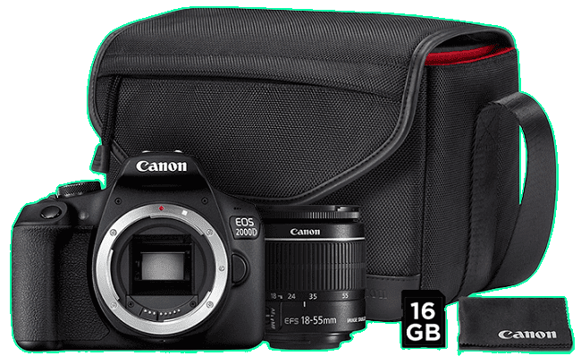

Fotoaparáty
CANON EOS 2000D + EF-S 18-55MM IS II VALUE UP KIT

Cena:519,00€469,00€
Parametre:
- Uhlopriečka ("): 3 "
- Wi-Fi: Áno
- GPS: Áno
Podrobný popis:
Digitálna zrkadlovka Canon EOS 2000D s objektívom Canon EF-S 18-55mm IS II v elegantnom čiernom prevedení disponuje 3" LCD displejom, snímačom CMOS typu APS-C s rozlíšením 24,1 megapixelov a obrazovým procesorom DIGIC 4+. Umožňuje kontinuálne snímanie rýchlosťou 3 sn/s. Zrkadlovka s citlivosťou ISO 100 až 6400 ponúka automatický inteligentný scénický režim, kreatívne filtre a režim Video Snapshot. K dispozícií tiež 9-bodové automatické zaostrovanie, integrovaný sprievodca funkciami a nastaveniami či optický hľadáčik. Zrkadlovka s podporou Wifi, NFC poskytuje filmy v rozlíšení Full HD/1080p s frekvenciou 30 snímok za sekundu.
SONY CYBERSHOT DSC-H300 ČIERNY
Cena:199,00€
Parametre:
- Uhlopriečka ("): 3 "
- Ohnisková vzdialenosť: 4.5 - 157.5
- Efektívny počet pixelov: 20,1 Mpx
Podrobný popis:
Kompaktný fotoaparát Sony CyberShot DSC-H300 má ľahké a prenosné telo, špičkový výkon a dizajn a výborné funkcie. Fotoaparát je vhodný pre bežné fotenie. Jeho objektív je širokouhlý a má 35 násobný optický zoom, vďaka ktorému dosiahnete skvelé výsledky vašich fotografií. Sony CyberShot DSC-H300 vám pomôže zachytiť i tie najmenšie detaily. Fotoaparát poskytuje ostré snímky aj pri slabom osvetlení. Je napájaný pomocou AA batérií, ktoré vám dovolia urobiť až 350 snímok pri jednom nabití fotoaparátu. LCD displej má veľkosť uhlopriečky 3 palce.
NIKON D5600+18-55 AF-P VR
Cena:679,00€
Parametre:
- Uhlopriečka ("): 3,2 "
- Wi-Fi: Áno
- GPS: Nie
Podrobný popis:
>Digitálna zrkadlovka NIKON D5600+18-55 AF-P VR v elegantnom čiernom prevedení je vybavená 24,2 Mpx snímačom CMOS s citlivosťou ISO 100 - 25 600. Zrkadlovka s dotykovým LCD displejom a uhlopriečkou 3,2" vám umožňuje natáčať videá v rozlíšení Full HD (1920 x 1080).Systém spracovania obrazu EXPEED 4 dosahuje kvalitnú redukciu šumu. NIKON D5600+18-55 AF-P VR disponuje podporou Wi-fi a funkciou Nikon SnapBridge, ktorá umožňuje prostredníctvom technológie Bluetooth® low energy1 pripojenie so smartfónom. Digitálna zrkadlovka a NIKON D5600+18-55 AF-P VR s podporou pamäťových kariet SDHC, SDXC.
FUJIFILM INSTAX MINI 11 MODRÁ
Cena:185,90€72,90€
Parametre:
- Min.ohnisková vzdialenosť: 30 mm
- Odolné prevedenie: Nie
Podrobný popis:
Štýlový Fujifilm Instax Mini 11 v modrom prevedení disponuje hľadáčikom s reálnym obrazom. Pýši sa okrúhlym telom a nízkou hmotnosťou, vďaka čomu umožňuje komfortné ovládanie. K dispozícii Režim Selfie pre jednoduché snímanie autoportérov. Samozrejmosťou je funkcia automatickej expozície. Tento set je určený pre tých, ktorí chcú mať alebo darovať instaxový fotoaparát spolu s filmom v peknom setovom balení tzv. MINI SETE.
CANON POWERSHOT SX620 HS ČIERNY
Cena:229,00€206,00€
Parametre:
- Celkový počet megapixelov: 21,1 Mpx
- Ohnisková vzdialenosť: 4,5 - 112,5
Podrobný popis:
Kompaktný fotoaparát Canon PowerShot SX620 HS Vás poteší nielen svojou prijateľnou cenou a atraktívnym prevedením, ale predovšetkým technickými vlastnosťami, ktorými si okamžite získa Vaše sympatie. S rozlíšením 20 Mpx, CMOS snímačom, 25-násobným priblížením a s rozhraním Wi-fi sa s ním môžete vydať na akékoľvek dobrodružstvo. Očakávať môžete fotografie i videá na naozaj vysokej úrovni. Videozáznamy vo Full HD kvalite vytvoríte už po stlačení jedného tlačidla. Rýchle reakcie a svižný chod zabezpečuje výkonný procesor DIGIC. Vytvorené zábery si možno pohodlne prezerať na LCD obrazovke s uhlopriečkou veľkou 3 palce. Skvelé výsledky môžete očakávať aj za slabého osvetlenia. Fotoaparát si poradí v každej situácii.
Všetky autorské práva sú vyhradené ©Damián Jaroš/CGP/II.B